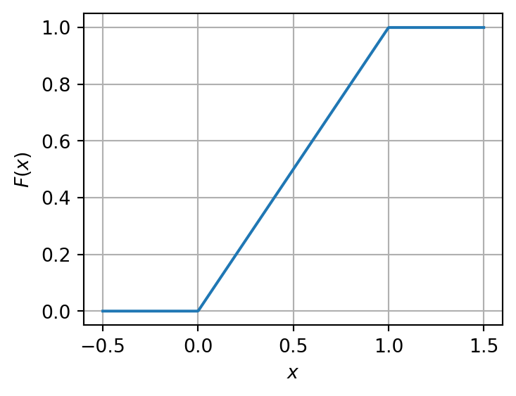
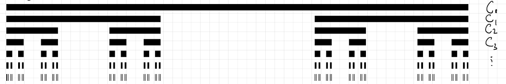

Definition 11.1 (Borel and Radon Measures) If \(\Omega\) is a topological space, any measure defined on the Borel \(\sigma\)-algebra \(\mathcal{B}(\Omega)\) is called a Borel measure.
A Borel measure \(\mu\) on \(\mathbb{R}\) is called a Radon measure if it assigns finite measure to all bounded intervals: \[
\mu((a, b]) < \infty \quad \text{for all } -\infty < a < b < \infty.
\tag{11.1}\]
(More generally, a Radon measure on a Hausdorff topological space is a locally finite Borel measure that is inner regular with respect to compact sets; on \(\mathbb{R}\), this simplifies to finiteness on compact sets \(\mu(K) < \infty\).)
11.2 Stieltjes Premeasures and Correspondence
Recall that for any non-decreasing, right-continuous function \(F: \mathbb{R} \to \mathbb{R}\), the associated Stieltjes set function \(\mu_F((a, b]) = F(b) - F(a)\) defines a premeasure on the algebra of finite disjoint unions of half-open intervals \(\mathcal{A}_{\mathbb{R}}\).
The next result shows that every Radon measure on \(\mathbb{R}\) arises from a unique (up to an additive constant) Stieltjes premeasure.
Theorem 11.1 (Characterization of Radon Measures on \(\mathbb{R}\)) If \(\mu\) is a Radon measure on \(\mathbb{R}\), then there exists a non-decreasing, right-continuous function \(F: \mathbb{R} \to \mathbb{R}\) (unique up to an additive constant) such that: \[
\mu((a, b]) = F(b) - F(a) \quad \text{for all } -\infty < a \le b < \infty.
\tag{11.2}\]
Uniqueness: If \(G: \mathbb{R} \to \mathbb{R}\) is another non-decreasing right-continuous function satisfying \(\mu((a, b]) = G(b) - G(a)\), then for all \(a, b \in \mathbb{R}\): \[G(b) - G(a) = F(b) - F(a) \implies G(b) = F(b) + [G(0) - F(0)].\]
Setting \(C = G(0) - F(0)\), we have \(G(x) = F(x) + C\), establishing uniqueness up to a constant \(C \in \mathbb{R}\).
Existence: Define \(F: \mathbb{R} \to \mathbb{R}\) centered at \(0\) by: \[
F(x) :=
\begin{cases}
\mu((0, x]), & x \ge 0, \\
-\mu((x, 0]), & x < 0.
\end{cases}
\tag{11.3}\]
Interval Measure Identity: For any \(a < b\), set additive subtraction yields \(\mu((a, b]) = F(b) - F(a)\).
Monotonicity: For \(x \le y\), set inclusion \((0, x] \subseteq (0, y]\) (or \((y, 0] \subseteq (x, 0]\) for negative values) together with monotonicity of \(\mu\) implies \(F(x) \le F(y)\).
Right-Continuity: Fix \(x \in \mathbb{R}\) and let \(x_n \downarrow x\) with \(x_n > x\). Then \((x, x_1] \setminus (x_n, x_1] = (x, x_n] \downarrow \emptyset\). By continuity of measure from above for finite measure sets: \[
F(x_n) - F(x) = \mu((x, x_n]) \xrightarrow{n \to \infty} 0.
\]
Proposition 11.1 (Equivalences for Premeasures (Driver, Prop. 6.3)) Let \(\mu\) be a finitely additive set function on an algebra \(\mathcal{A}\). The following conditions are equivalent:
\(\mu\) is a premeasure (countably additive) on \(\mathcal{A}\).
Monotone Increasing Continuity: If \(\{A_n\}_{n=1}^\infty \subseteq \mathcal{A}\) with \(A_n \uparrow A \in \mathcal{A}\), then \(\mu(A_n) \uparrow \mu(A)\) as \(n \to \infty\).
Moreover, if \(\mu(\Omega) < \infty\), these are also equivalent to:
Monotone Decreasing Continuity: If \(\{A_n\}_{n=1}^\infty \subseteq \mathcal{A}\) with \(A_n \downarrow A \in \mathcal{A}\), then \(\mu(A_n) \downarrow \mu(A)\) as \(n \to \infty\).
Continuity at Empty Set from Above: If \(\{A_n\}_{n=1}^\infty \subseteq \mathcal{A}\) with \(A_n \downarrow \emptyset\), then \(\mu(A_n) \downarrow 0\).
(1) \(\Rightarrow\) (2): Let \(A_n \uparrow A \in \mathcal{A}\). Set \(B_1 = A_1\) and \(B_n = A_n \setminus A_{n-1} \in \mathcal{A}\) for \(n \ge 2\). The sequence \(\{B_n\}_{n=1}^\infty\) is pairwise disjoint with \(\bigcup_{n=1}^\infty B_n = A\) and \(\bigcup_{n=1}^N B_n = A_N\). By countable additivity: \[
\mu(A) = \sum_{n=1}^\infty \mu(B_n) = \lim_{N \to \infty} \sum_{n=1}^N \mu(B_n) = \lim_{N \to \infty} \mu(A_N).
\]
(2) \(\Rightarrow\) (1): Let \(\{B_n\}_{n=1}^\infty \subseteq \mathcal{A}\) be pairwise disjoint with \(\bigcup_{n=1}^\infty B_n = B \in \mathcal{A}\). Define \(A_N := \bigcup_{n=1}^N B_n \in \mathcal{A}\). Then \(A_N \uparrow B\). Applying (2): \[
\mu(B) = \lim_{N \to \infty} \mu(A_N) = \lim_{N \to \infty} \sum_{n=1}^N \mu(B_n) = \sum_{n=1}^\infty \mu(B_n).
\]
Equivalence of (3)–(4) for Finite Measures: Follows directly by complementary set subtraction: \(\mu(B \setminus A) = \mu(B) - \mu(A)\) whenever \(A \subseteq B\) and \(\mu(B) < \infty\).
11.4 Cumulative Distribution Functions (CDFs)
Definition 11.2 (Cumulative Distribution Function) Let \(\mu\) be a Borel probability measure on \(\mathbb{R}\) (so \(\mu(\mathbb{R}) = 1\)). The Cumulative Distribution Function (CDF) of \(\mu\) is the function \(F_\mu: \mathbb{R} \to [0, 1]\) defined by: \[
F_\mu(x) := \mu((-\infty, x]).
\tag{11.4}\]
Corollary 11.1 (Characterization of Probability CDFs) A function \(F: \mathbb{R} \to \mathbb{R}\) is the CDF of a unique Borel probability measure \(\mu\) on \(\mathbb{R}\) if and only if it satisfies:
Monotonicity:\(F\) is non-decreasing;
Right-Continuity:\(F(x^+) = \lim_{y \downarrow x} F(y) = F(x)\) for all \(x \in \mathbb{R}\);
11.5 Classification of Borel Probability Measures on \(\mathbb{R}\)
Every CDF \(F\) can be decomposed into three standard types of behavior: Absolutely Continuous, Purely Discrete, and Singular Continuous.
11.5.1 Absolutely Continuous Measures
A measure \(\mu\) is continuous/absolutely continuous if \(F_\mu\) is continuous everywhere. In this case, singletons have zero measure: \[
\mu(\{x_0\}) = \lim_{x \uparrow x_0} \mu((x, x_0]) = \lim_{x \uparrow x_0} (F_\mu(x_0) - F_\mu(x)) = 0.
\tag{11.6}\]
Example (Uniform Distribution):\[
F(x) = \begin{cases} 0, & x \le 0, \\ x, & 0 \le x \le 1, \\ 1, & x \ge 1. \end{cases}
\tag{11.7}\]
In the following, we use Python to visualize the CDF of the uniform distribution on \([0, 1]\).
import numpy as npimport matplotlib.pyplot as pltx = np.linspace(-0.5, 1.5, 500)F = np.piecewise( x, [x <0, (x >=0) & (x <1), x >=1], [0, lambda x: x, 1])plt.figure(figsize=(4, 3))plt.plot(x, F)plt.xlabel(r'$x$')plt.ylabel(r'$F(x)$')#plt.title('CDF of Uniform Distribution on [0, 1]')plt.grid(True)plt.show()

Figure 11.1: CDF of Uniform Distribution on [0, 1]
11.5.2 Purely Discrete / Point Mass Measures
A measure \(\mu\) is purely discrete if its CDF \(F_\mu\) is a step function supported on a countable set of point masses \(\{x_k\}\).
Note that the CDF \(F_\mu\) is discontinuous at the points \(x_0 = 0\), \(x_1 = 1\), and \(x_2 = 2\), with jump sizes equal to the corresponding point masses: \[
F_\mu(x) =
\begin{cases}
0, & x < 0, \\
1/3, & 0 \le x < 1, \\
4/9, & 1 \le x < 2, \\
1, & x \ge 2.
\end{cases}
\tag{11.9}\]
In the following, we use Python to visualize the CDF of this discrete measure.
11.5.3 Singular Continuous Measures (The Devil’s Staircase / Cantor Measure)
A measure \(\mu_{\text{Cantor}}\) can be continuous everywhere (\(F\) has no jump discontinuities), yet completely singular with respect to Lebesgue measure (\(\mu_{\text{Cantor}}\) is concentrated entirely on a set of Lebesgue measure zero).
Construction (Cantor Function): Let \(C_n\) denote the \(n\)-th stage in the construction of the middle-thirds Cantor set \(C = \bigcap_{n=1}^\infty C_n \subset [0, 1]\).

Figure 11.3: Cantor Set
Define the density functions and sequence of CDFs: \[
F_n(x) := \int_0^x \left(\frac{3}{2}\right)^n \mathbf{1}_{C_n}(t) \, dt.
\tag{11.10}\]
Uniform Limit:\(F_n \to F_{\text{Cantor}}\) uniformly on \([0, 1]\).
Properties of \(F_{\text{Cantor}}\):
\(F(0) = 0\) and \(F(1) = 1\);
\(F\) is continuous and non-decreasing;
\(F'(x) = 0\) almost everywhere with respect to Lebesgue measure (since \(F\) is constant on each open interval removed during the Cantor construction);
\(\mu_{\text{Cantor}}(\{x\}) = 0\) for all \(x \in \mathbb{R}\);
\(\mu_{\text{Cantor}}(C) = 1\), even though \(m(C) = 0\) (where \(m\) is Lebesgue measure).